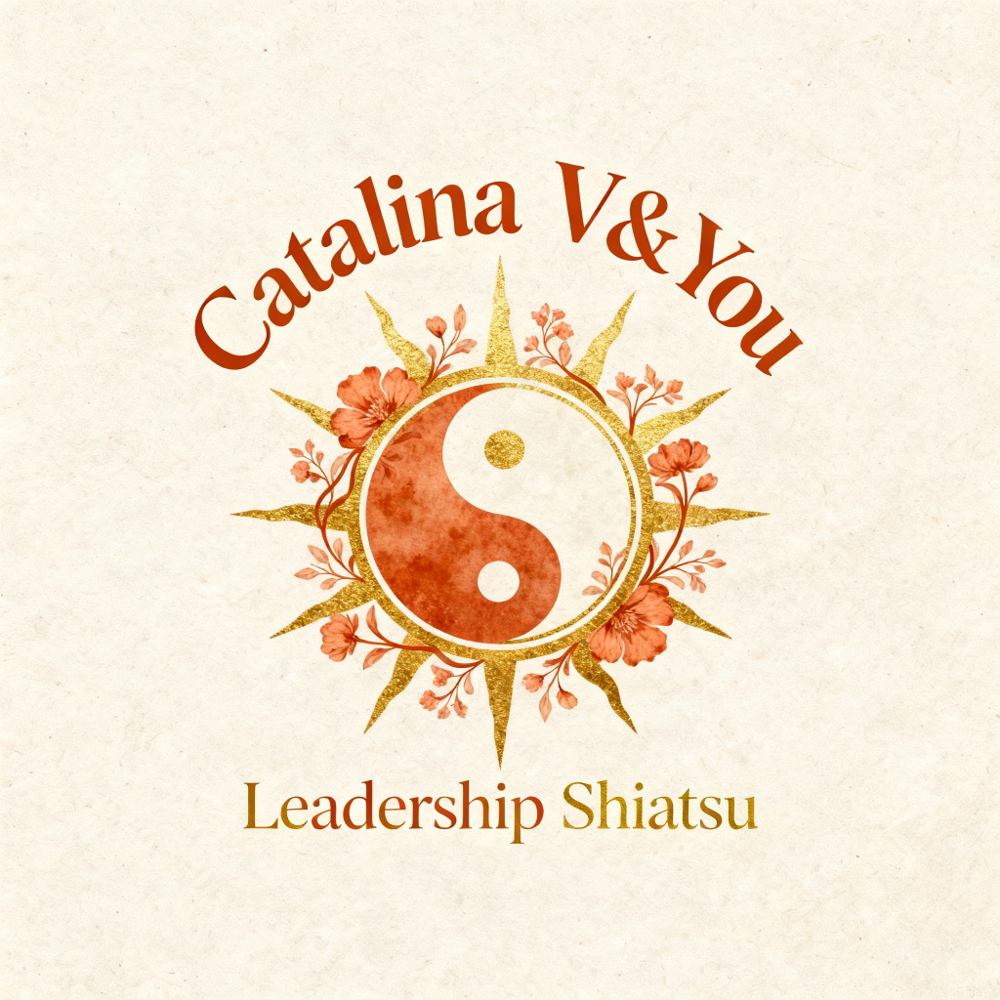

Guylaine Juan - Ecole de Shiatsu et Médecine Tradionnelle ChinoiseÉcole de Médecine Traditionnelle Chinoise & Shiatsu
Transformez votre vie et votre pratique professionnelle grâce à la sagesse ancestrale du Shiatsu et de la Médecine Traditionnelle Chinoise. Plus de 20 ans d'expérience au service de votre transformation.
Découvrir nos FormationsUne Approche Authentique et Accessible
Bienvenue à l'école de Shiatsu Guylaine Juan., ces formations représente l'aboutissement de plus de 20 ans de pratique et d'enseignement en Médecine Traditionnelle Chinoise.
Je vous accompagne dans votre formation professionnelle de praticien en shiatsu, notre cursus unique allie flexibilité du distanciel via Zoom et la pratique intensive lors de week-end en présentiel au château de Poët Célard. Que vous souhaitiez une initiationau Shiatsu Familial ou un parcours certifiant, ma méthode s'adapte à votre rythme pour une maîtrise profonde des énergies.
Formée par André Nahum au Centre Shiatsu à Paris , Guylaine transmet une méthode éprouvée qui combine rigueur technique et transformation personnelle profonde.
⭐ Plus de 20 ans d'expérience
👩⚕️ +500 patients accompagnés
🌍 Accessible en ligne partout en France
💚 Accompagnement personnalisé
🎓 Diplôme certifié reconnu par Liberlo

Guylaine Juan
Fondatrice
Guylaine - Votre Enseignante
Guylaine Juan pratique et enseigne la Médecine Traditionnelle Chinoise et le Shiatsu depuis plus de 20 ans. Formée par le maître André Nahum au prestigieux Centre Shiatsu à Paris, elle a développé une approche unique qui allie authenticité traditionnelle et accessibilité moderne.
Basée en Ardèche, Guylaine a fait le choix de démocratiser l’accès à cette sagesse ancestrale en créant des formations en ligne de haute qualité, permettant à chacun de se former où qu’il soit dans le monde.
Son approche se distingue par sa capacité à intégrer le développement personnel profond avec l’excellence technique. Grâce à sa pratique avancée de la Médecine Traditionnelle Chinoise, elle a développé une remarquable résistance au froid et continue d’explorer les dimensions les plus subtiles de l’énergie.
📝 Formation et Expertise
- ✔️ Formée par André Nahum, Centre Shiatsu Paris
- ✔️ Plus de 20 ans d’expérience en pratique et enseignement
- ✔️ Spécialiste en MTC, rhumatologie, dermatologie
- ✔️ Experte en transformation personnelle et leadership
Nos Formations
Shiatsu Familial
Idéal pour prendre soin de vos proches et découvrir les fondamentaux du Shiatsu dans un cadre familial et bienveillant.
- Techniques de base du Shiatsu
- Protocoles pour toutes la famille
- Pour les aidants et les aider
- Soulagement des tensions quotidiennes
- Formation 100% en ligne
- Accès à vie aux contenus
- Accompagnement personnalisé
- Un Week-End de Stage au Château avec logement et restauration.
Shiatsu Professionnel
Formation complète pour devenir praticien certifié en Shiatsu et Médecine Traditionnelle Chinoise. Destinée aux professionnels de santé en reconversion.
- Curriculum complet de MTC
- Rhumatologie, dermatologie, pathologies respiratoires
- Santé des femmes et méridiens
- Points Luo et techniques avancées
- Intégration des huiles essentielles
- Certification professionnelle
- Examens théoriques et pratiques
Le Corps du Pouvoir
Retraite leadership premium de 8 jours. Une immersion totale combinant Shiatsu et développement du leadership pour dirigeants et entrepreneurs.
- 8 jours d'immersion dans une maison de maitre
- Techniques Shiatsu pour leaders
- Développement du pouvoir personnel
- Gestion de l'énergie et du stress
- Groupe exclusif limité
- Transformation profonde
- Hébergement de luxe inclus
Découvrir nos eBooks
Guides pratiques pour appliquer le Shiatsu au quotidien.
📚 Découvrir les eBooksCe que disent nos élèves
Ce que disent nos élèves
"Cette semaine, j’ai 4 rendez-vous Shiatsu, je suis tellement contente 🙏 Ce matin, une cliente m’a dit à quel point elle avait ressenti les bienfaits dès la fin de la séance : respiration plus fluide, sensation incroyable… Elle te connaissait et m’a félicitée. J’étais émue. Merci pour ton enseignement, c’est grâce à toi 🙏"
"La formation Shiatsu Professionnel a complètement transformé ma pratique d'infirmière. J'ai trouvé une nouvelle voie professionnelle qui me passionne."
"L'authenticité de l'enseignement de Guylaine est remarquable. On sent la transmission d'un savoir véritable, pas juste des techniques."
"Le Corps du Pouvoir a été l'expérience la plus transformatrice de ma vie de dirigeant. Je gère mon énergie et mon stress d'une manière totalement nouvelle."
Rejoindre la Communauté
Retrouve nos posts, astuces, partages et retours d’expérience. C’est l’endroit où on progresse ensemble, étape par étape.
Rejoindre la communautéConférence Gratuite : Les 3 Voies du Shiatsu
Prochaine Conférence : 12 Mars 2026
Découvrez comment le Shiatsu peut transformer votre vie personnelle et professionnelle lors de cette conférence en direct de 90 minutes.
Réserver ma placeContactez-nous
📍 Localisation
Ardèche, France
equipe@vyboheme.com
📱 Réseaux Sociaux
📘 Facebook : Guylaine Juan
📸 Instagram : @GuylaineJuan
💼 LinkedIn : Guylaine Juan
▶️ YouTube : Guylaine Juan MTC
FAQ
C'est quoi le Shiatsu Familial ?
Le Shiatsu Familial est une formation qui vous apprend à utiliser les techniques du Shiatsu pour soulager naturellement les petits maux du quotidien : stress, fatigue, maux de tête, tensions du dos, troubles du sommeil, maux de ventre. Elle est accessible à toutes les personnes qui souhaitent prendre soin de leur famille de manière naturelle, sans aucun prérequis.
Faut-il avoir des bases en médecine ou en bien-être pour suivre cette formation ?
Non. La formation Shiatsu Familial est conçue pour les débutants complets. Aucune connaissance préalable n'est nécessaire. Guylaine Juan vous guide pas à pas, depuis les bases de l'énergie jusqu'aux gestes pratiques.
Comment se déroule la formation Shiatsu Familial ?
La formation se déroule en deux temps : des cours écrits, des vidéos et des tests sur la plateforme Skool, accessibles à votre rythme depuis chez vous, puis un week-end en présentiel au château de Poët-Celard en Drôme provençale pour mettre en pratique les techniques apprises.
Que vais-je savoir faire à la fin de la formation Shiatsu Familial ?
À la fin de la formation, vous serez capable de soulager naturellement le stress et l'anxiété, les tensions musculaires et les douleurs du dos, les troubles du sommeil, les maux de tête et de ventre, et d'accompagner vos proches dans leur bien-être quotidien grâce aux gestes du Shiatsu.
Combien coûte le programme Shiatsu Familial ?
Contactez nous à equipe@vyboheme.com.
Le Shiatsu Familial peut-il remplacer un médecin ?
Non. Le Shiatsu Familial est une approche complémentaire qui agit sur l'énergie et le bien-être. Il ne remplace pas un suivi médical. Pour tout symptôme persistant ou grave, consultez toujours un professionnel de santé.
À qui s'adresse la formation Shiatsu Professionnel ?
La formation Shiatsu Professionnel s'adresse aux professionnels de santé souhaitant enrichir leur pratique — infirmiers, aides-soignants, kinésithérapeutes, médecins, sages-femmes — ainsi qu'à toutes les personnes en reconversion professionnelle souhaitant exercer le métier de praticien en Shiatsu.
Peut-on exercer le Shiatsu comme métier après cette formation ?
Oui. La formation Shiatsu Professionnel est une formation certifiante qui vous donne les bases théoriques et pratiques pour exercer en cabinet, à domicile ou en complément d'une activité de soin existante.
Comment se déroule la formation Shiatsu Professionnel ?
La formation combine des cours écrits, des vidéos et des tests sur la plateforme Skool, un zoom mensuel avec Guylaine pour répondre à vos questions, et deux week-ends en présentiel au château de Poët-Celard en Drôme provençale.
Combien coûte la formation Shiatsu Professionnel ?
Contactez nous à equipe@vyboheme.com.
Quelle est la différence entre le Shiatsu Familial et le Shiatsu Professionnel ?
Le Shiatsu Familial est destiné aux personnes qui souhaitent prendre soin de leur entourage sans exercer à titre professionnel. Le Shiatsu Professionnel est une formation certifiante complète, qui couvre la théorie de la médecine traditionnelle chinoise, les protocoles de traitement, le diagnostic énergétique et la pratique clinique, pour exercer en tant que praticien.
Qui est Guylaine Juan ?
Guylaine Juan est praticienne et formatrice en Shiatsu depuis plus de 20 ans. Elle a été formée au Centre Shiatsu Paris auprès d'André Nahum. Elle a accompagné des centaines de patients et transmet aujourd'hui son expertise dans ses formations.
La formation Shiatsu Professionnel est-elle finançable ?
Guylaine Juan est en cours d'obtention de la certification Qualiopi, qui permettra aux apprenants d'accéder aux financements professionnels via leur OPCO ou d'autres dispositifs. Contactez-nous pour connaître les dernières informations.
Où se déroulent les week-ends en présentiel ?
Les week-ends se déroulent au château de Poët-Celard, situé en Drôme provençale. Un cadre naturel propice à l'apprentissage et au ressourcement.
C'est quoi le programme Leadership Shiatsu ?
Le Leadership Shiatsu est un programme immersif d'une semaine au château de Poët-Celard en Drôme provençale, conçu pour les cadres dirigeants qui ont perdu leur élan, leur clarté ou leur autorité naturelle.
À qui s'adresse le Leadership Shiatsu ?
Ce programme s'adresse aux dirigeants, managers et cadres qui ressentent une déconnexion, qui ont perdu leur énergie de leader, ou qui cherchent à retrouver une autorité naturelle et authentique.
Comment se déroule la semaine Leadership Shiatsu ?
Une semaine en présentiel au château de Poët-Celard. Travail sur le corps, l'énergie et la posture, guidé par Guylaine Juan, avec des protocoles issus de la MTC et du Shiatsu.
Combien coûte le programme Leadership Shiatsu ?
Contactez nous à equipe@vyboheme.com.
Pourquoi travailler le leadership par le corps ?
Le leadership authentique se construit aussi via l'équilibre interne. Travailler par le corps permet d'agir directement sur les déséquilibres liés au stress, à la charge mentale et à l'épuisement, au-delà de la réflexion mentale seule.
Combien de participants par session ?
Les places sont volontairement limitées pour garantir un accompagnement personnalisé et un travail en profondeur. Contactez Guylaine pour connaître les disponibilités.